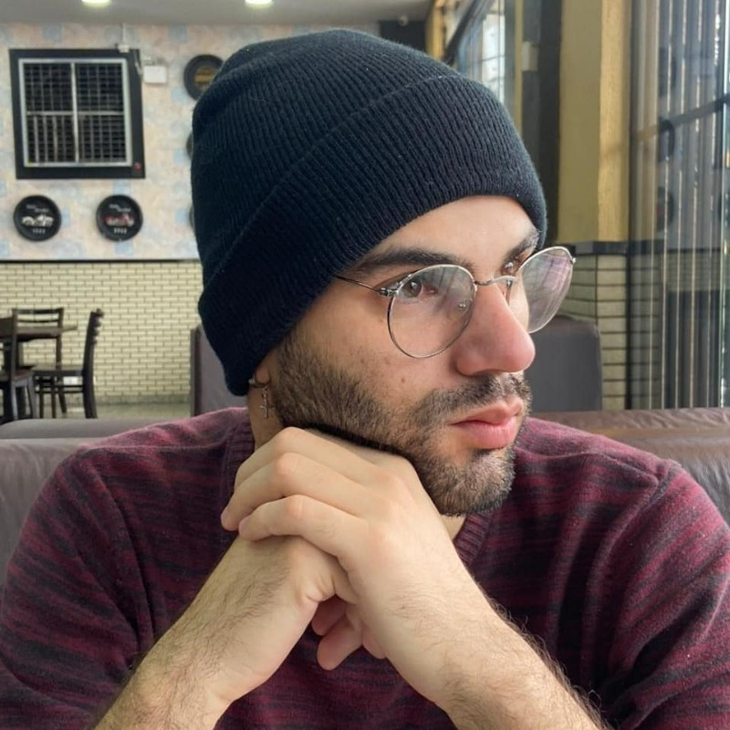

Jacareí, São Paulo, Brasil
Celular: (12) 981079288
e-mail: lugonpe9481@gmail.com

Idiomas
Português (Nativo)
Inglês (Avançado)
Principais Competências
Habilidades Analíticas
Pensamento Crítico
Análise Espacial
Aquisição de Dados
Banco de Dados Espaciais
Arcmap
ArcGIS
Aplicações SIG
Desenho Técnico
Análise de Dados
Microsoft Office
Lucas Gonçalves Pereira
Experiência
 Canoinhas Geoassessoria
Canoinhas GeoassessoriaDesenhista
maio de 2021 - Presente (2 anos 11 meses)
Atuação junto a equipe de Geoprocessamento e Cadastro em análises ambientais e mapeamentos
através
do uso de imagens de satélite, vetorização de informações e manipulação de dados geográficos
para a
construção de mapas e croquis que atendam as necessidades da empresa (análises de conversão
floresta
nativa x não floresta, mapas para projetos de crédito de carbono, mapas para prospecção de
plantio,
informativos de plantio e corte de silvicultura).
Canoinhas GeoassessoriaDesenhista Técnico
setembro de 2013 - março de 2016 (2 anos 7 meses)
Serviços de assessoria técnica, geoprocessamento de imagens, vetorização de imagens VANT,
geração/atualização de base cartográfica, vetorização de microplanejamento ambiental,
análise de
alinhamento de plantio.
 Secretaria Municipal de Meio Ambiente de Jacareí
Secretaria Municipal de Meio Ambiente de JacareíEstagiário
março de 2013 - setembro de 2013 (7 meses)
Atendimento ao público, orientação aos munícipes acerca de processos ambientais, auxílio
aos
engenheiros responsáveis do setor.
Formação Acadêmica
Fatec CPS
Curso Superior de Tecnologia (CST), Geoprocessamento
(fevereiro de 2022 - dezembro de 2024)
Universidade Estadual do Centro-Oeste
Licenciatura em Língua Portuguesa e Literaturas de Língua Portuguesa, Licenciatura em
Letras
(janeiro de 2016 - abril de 2021)
Etep - Centro Universitário
Tecnólogo em Gestão Ambiental, Gestão Ambiental
(janeiro de 2012 - dezembro de 2013)